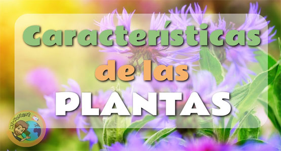

Características generales de las plantas

Nutrición autótrofa,
lo cual quiere decir que generan su propio alimento a partir de materia inorgánica (agua y sustancias del suelo y el aire) y luz solar (radiación ultravioleta). A este complejo proceso de fabricación de carbohidratos se le conoce como fotosíntesis.
Ausencia de locomoción,
es decir, son seres incapaces de desplazarse a voluntad (a diferencia de los animales). Algunas de ellas cambian de hábitat a merced de las aguas (algas y demás plantas acuáticas).
Células dotadas de pared celular,
o sea, que sus células presentan una estructura rígida de celulosa que recubre su membrana plasmática, confiriéndoles dureza, resistencia, pero haciendo más lento y complicado el proceso de crecimiento.